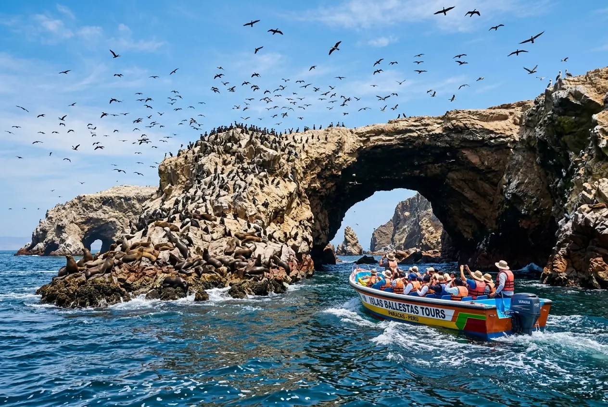

Guides
Complete Ballestas Islands Guide 2026

The Ballestas Islands are the most famous trip in Paracas. Fed by the cold Humboldt Current, they hold so much marine life that they are known as the "Peruvian Galapagos". This guide covers the real total cost, the best time to go and what you will see.
How much does the Ballestas Islands tour cost?
Our tour costs S/ 80 per person and includes a modern speedboat, a certified bilingual guide and passenger insurance. Separately, every visitor pays the official taxes at the pier:
- Adults: S/ 16 (SERNANP fee + boarding tax).
- Children: S/ 8.
- Payment: cash, at the El Chaco pier ticket booth.
Be wary of "teaser" prices that leave these taxes out. We confirm the full cost before you book.
Departure times and duration
There are daily departures at 8:00 AM and 10:00 AM from El Chaco tourist pier. The trip takes about 2 hours.
We recommend the first departure: the sea is usually calmer, visibility is better and wildlife is most active. Wind and swell tend to pick up later in the morning.
What you will see
Before reaching the islands, the boat stops in front of the Paracas Candelabra, a geoglyph over 150 meters tall etched into the sandy hillside and visible only from the sea. Then, at the islands:
- Sea lions: large colonies and nurseries resting on the rocks.
- Humboldt penguins: in their protected natural habitat.
- Guano birds: thousands of boobies, cormorants, pelicans and Inca terns.
- Dolphins: they often swim alongside the boat on the way.
Can you land on the islands or swim?
No. The Ballestas Islands are a protected reserve: the tour is 100% boat-based and landing or swimming is prohibited to protect the sea lions and penguins. If you want to see wildlife underwater, check our scuba diving tour.
What to bring
- Windbreaker or light jacket: the ocean breeze is brisk on the boat.
- Sunscreen, sunglasses and a strapped hat: UV is strong on open water.
- Camera or phone with a strap: to shoot the sea lions and penguins safely.
- Cash: for the pier taxes.
The pier has restrooms and cafés where you can buy water before departure.
Will I get seasick?
The sea is usually calm at the first departure. If you are prone to motion sickness, take a seasickness pill 30 minutes before boarding and keep breakfast light. The trip suits children from age 2, seniors and travelers with uncomplicated pregnancies: everyone stays seated and wears a life jacket.
What if the weather is bad?
If the Port Authority closes the pier due to unusual swell, we offer to reschedule you to the next available departure or give you a 100% refund.
Ready to see the Ballestas?
Book your seat on the 8:00 AM departure and we will confirm the total cost within minutes.
Book on WhatsAppTour details: Ballestas Islands Tour. To combine it with the desert: Ballestas + National Reserve in one day.